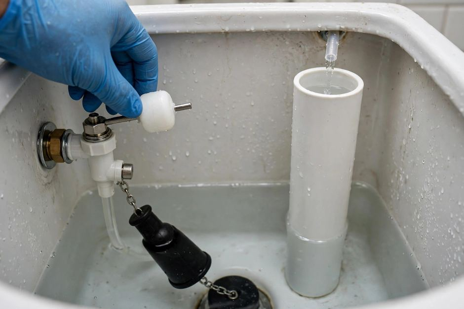
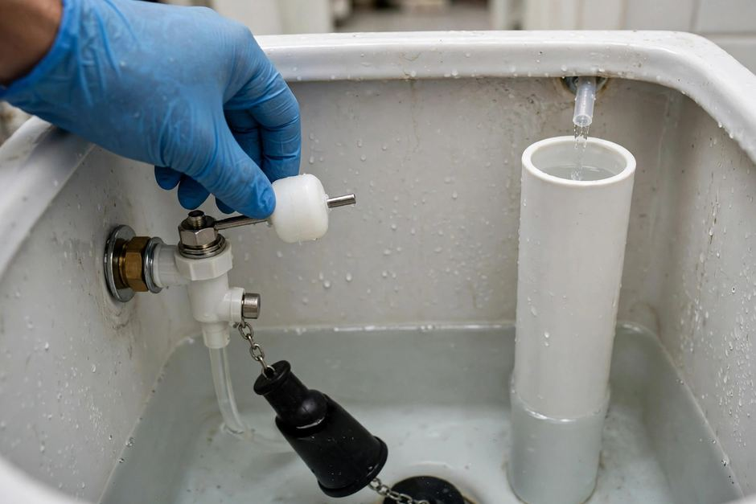
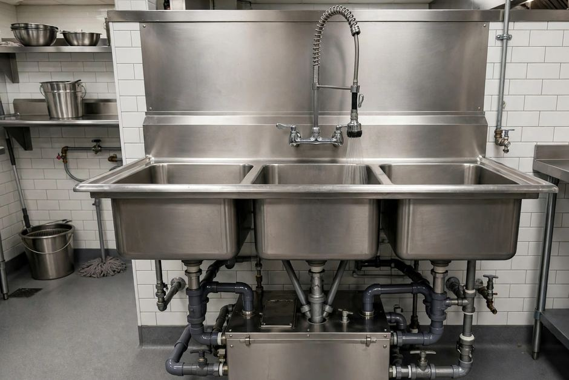
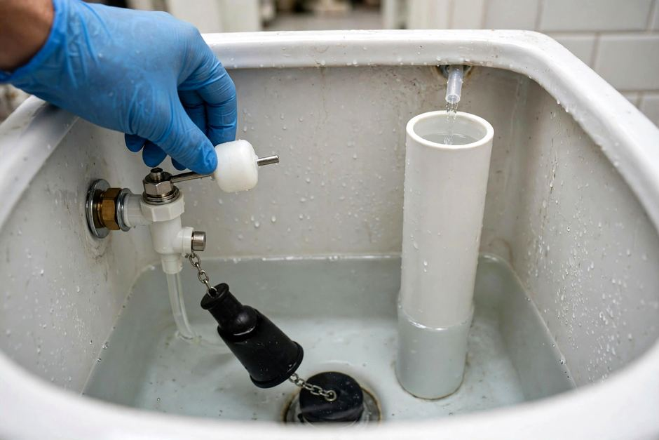

Toilet Services
Toilet Repair in Belleville, IL
Toilet problems range from running water and weak flush to leaks at the base and rocking on the floor. This page covers repair, replacement, and installation in one place, so the right path follows from findings rather than habit. Hinkle Plumbing Company assesses toilets in Belleville, IL, with plumbing repairs context for connected piping and shutoffs.
1610 W Main St, Belleville, IL 62220Monday through Friday, 8:00 AM to 4:30 PM(618) 677-6556
What This Service Covers
Toilet Repair Scope in Belleville
Toilet scope covers tank parts, bowl function, base sealing, shutoff control, and installation planning for homes in Belleville, IL. Each part below is assessed on its own findings, and replacement is discussed where repair no longer serves the fixture.
Running Toilet Repair
Running toilets often reflect flapper, fill valve, or overflow findings inside the tank. Tank parts are reviewed for wear and adjustment context, and repair scope reflects which part drives the running pattern.
Weak Flush Review
Weak flush can reflect rim jet blockage, tank water level context, or drain behavior. Flush patterns are reviewed with tank and drain findings, because weak flush alone does not identify a single cause.
Base Leak and Wax Ring
Leaks at the base often reflect wax ring or flange findings, and rocking can signal flange or floor context concerns. Base condition, flange stability, and floor findings are reviewed before reseating or replacement is discussed.
Toilet Replacement
Replacement covers removal of the existing toilet and installation of a replacement unit with new sealing and connections. Rough-in context, flange condition, and shutoff operation are reviewed during planning for the replacement.
New Toilet Installation
New installation covers placement, drain connection, water supply connection, and sealing for added bathrooms or remodels. Drain location and supply routing shape the plan, and fixture placement reflects room layout and access.
About Hinkle Plumbing Company
Toilet Work From a Belleville Base
Toilet repair, replacement, and installation for Belleville homes come from Hinkle Plumbing Company's office in the city. Tank, bowl, base, and shutoff findings are reviewed together, and scope is discussed before work begins.
Toilets are high-frequency fixtures, and small faults can waste water or damage floors when left unaddressed. Tank parts wear with use, base seals age, and shutoffs stiffen over time, particularly in older piping contexts. Hinkle Plumbing Company reviews each part on its findings and discusses repair against replacement plainly, and leak repair findings help where base or supply leaks extend beyond the fixture.

How we workImage showing toilet tank parts during repair in a Belleville home.
How Assessment Works
Toilet Assessment Steps
The steps flex with the condition of the job, but the sequence stays the same.
Discuss Symptoms
Running water, weak flush, base moisture, rocking, and shutoff difficulty are discussed to narrow the fault. Symptom details help separate tank faults from base faults and from drain or supply concerns.
Inspect Tank and Bowl
Tank parts, bowl water patterns, and flush behavior are inspected for wear and function. Findings shape whether adjustment, part replacement, or full fixture replacement is discussed.
Check Base and Floor
Base stability, floor moisture, and flange context are checked for sealing and support concerns. Base findings shape reseating scope, and floor damage observations are shared where relevant.
Check Shutoff and Supply
Shutoff operation and supply line condition are checked before repair or replacement proceeds. Shutoff findings shape sequencing, because a seized shutoff changes how water control is handled during work.
Repair or Replace
Repair or replacement proceeds on the findings, with sealing, connections, and flush function checked after work. Findings are discussed, and operation observations are shared so the fixture is understood after completion.
Repair Approaches
Toilet Repair Methods
Toilet methods reflect the fault found, the fixture condition, and the age context of connected piping. Options below are discussed during assessment, and suitability is confirmed for the specific fixture rather than assumed.
Flapper and Fill Valve Work
Flapper and fill valve work addresses running water and refill faults inside the tank. Part condition and adjustment context are reviewed, and replacement parts are matched to the tank and fixture type.
Flush Valve and Rim Review
Flush valve condition and rim jet flow are reviewed where flush strength is the concern. Blockage and wear findings shape the response, and drain behavior is considered alongside tank findings.
Wax Ring Reseating
Reseating with a new wax ring addresses base leaks where flange and floor findings support that scope. Flange stability is checked before reseating, because flange faults call for a different repair path.
Flange Repair Context
Flange condition is reviewed where rocking or base movement is present. Flange repair context is discussed in general terms, and floor support findings shape the overall scope for the fixture.
Full Fixture Replacement
Full replacement suits fixtures with cracked bowls, persistent faults, or parts that no longer serve the fixture. Rough-in, flange, and shutoff findings shape installation planning for the replacement unit.
Supply Line Replacement
Supply line replacement addresses brittle or leaking lines serving the toilet. Line material and connection condition are reviewed, and shutoff findings shape sequencing for the replacement work.
Common Patterns
When Toilet Repair Is Discussed
Toilet concerns often appear as running water, weak flush, or moisture at the base. The patterns below describe common reasons for assessment, without describing a specific property or job.

Toilet Running Between Uses
A common call describes a toilet that runs between uses, with water sound continuing after the tank should have filled. Assessment reviews flapper seating, fill valve function, and overflow context to identify the driving part. Repair scope reflects the part findings, and shutoff operation is checked before tank work proceeds, so water control stays clear throughout. Assessment findings are discussed plainly before work scope is set for the property.
Moisture at the Toilet Base
A common call describes moisture or odor at the toilet base, sometimes with slight rocking when the fixture is used. Assessment checks base sealing, flange stability, and floor moisture patterns to narrow the cause. Reseating, flange work, or replacement is discussed on the findings, and supply line condition is reviewed alongside base findings. Combined findings shape the plan, and household observations are included in the discussion.
Signs to Note
Toilet Signs That Call for Assessment
Most calls fall into a few patterns. Knowing which pattern applies decides what the visit involves.
Water Running in the Tank
Water running after filling can signal flapper or fill valve wear. Tank findings shape repair scope, and running patterns are reviewed with water level context inside the tank. Observations shape the repair discussion.
Weak or Incomplete Flush
Weak flush can reflect tank, rim, or drain findings, and flush patterns help narrow the cause. Tank and drain findings are reviewed together before repair scope is set for the fixture.
Rocking or Base Moisture
Rocking or moisture at the base can signal sealing or flange concerns. Base stability and floor findings are reviewed, because base faults can damage flooring when left unaddressed. Findings are reviewed during assessment.
Stiff or Leaking Shutoff
A stiff or leaking shutoff complicates repair sequencing and calls for assessment before tank work. Shutoff findings shape water control planning, and supply line condition is reviewed at the same time.
Scope Factors
What Shapes Toilet Work Scope
Fixture condition, base findings, and shutoff context shape toilet scope.
Repair Versus Replacement
Part-level repair and full fixture replacement carry different scope, and fixture condition findings shape the choice. Findings are discussed by phone, and replacement planning includes flange, sealing, and shutoff context.
Base and Floor Findings
Flange condition, floor moisture, and base stability affect reseating and repair scope. Base findings are reviewed during assessment, and floor restoration needs are discussed where relevant. Findings are discussed by phone.
Shutoff and Supply Work
Shutoff replacement and supply line work add scope where seized or brittle parts are found. Shutoff findings are included in the discussion, and readers are invited to call to discuss scope for a specific fixture.
Reviews from Google
What Customers Say on Google
★★★★★
“Very prompt and responsive, the worker was friendly and informative! Will use this company again!”
★★★★★
“Don did an outstanding job for me when I needed him and highly recommend his business”
★★★★★
“Rated 5.0 out of 5 across 3 Google reviews, all five stars.”

Is a permit needed for direct toilet replacement?
Permit rules depend on scope. The City of Belleville requires a permit before plumbing work begins (§152.05(A)); direct replacement of a toilet, sink, faucet, or other appliance is exempt, except hot water heaters require an electrical or gas permit (§152.05(B)(3)). Current City requirements are checked during planning.
Why does a toilet run between uses?
Running often reflects flapper seating, fill valve function, or overflow context inside the tank. Tank parts are inspected for wear and adjustment needs, and repair scope reflects which part drives the running pattern for the fixture. Findings are reviewed together, and household observations are included in the discussion.
What causes moisture at the toilet base?
Base moisture often reflects wax ring or flange findings, and rocking can signal flange or floor context concerns. Base stability, flange condition, and floor moisture patterns are reviewed before reseating, flange work, or replacement is discussed. Related system findings are reviewed together, and observations shape the response.
What affects the scope of toilet repair or replacement?
Fixture condition, tank parts, base and flange findings, shutoff operation, and supply line condition shape the scope. Each factor is reviewed during assessment, and readers are invited to call (618) 677-6556 to discuss scope for a specific toilet. Findings are discussed by phone before work is scheduled.
Related services
Related Services

Plumbing Repair in Belleville, IL
General plumbing repair covers leaks, drips, and fixture problems that can appear alongside toilet faults.
Leak Repair in Belleville, IL
Leak repair covers supply and drain leaks, including base and supply leaks that extend beyond the toilet fixture.
Sink Repair in Belleville, IL
Sink repair covers bathroom sink drains, traps, faucets, and seals in the same bathroom as the toilet.Mon–Fri 8:00 AM–4:30 PM
Discuss Toilet Repair in Belleville
Call (618) 677-6556 during Monday through Friday, 8:00 AM to 4:30 PM to discuss toilet repair in Belleville. Closed Saturday and Sunday. Tank, base, and shutoff findings are reviewed during assessment.

Talk with the local team
Request Toilet Repair & Installation
Call (618) 677-6556 during office hours, Monday through Friday, 8:00 AM to 4:30 PM. Tell us what is happening and we will talk through the next step.